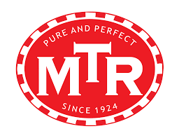
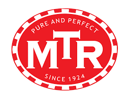

Freanch Toast
Rs. 100
It is a breakfast and brunch dish made with old bread slices that are soaked in a milk and egg mixture and fried until golden brown and crispy

It is a breakfast and brunch dish made with old bread slices that are soaked in a milk and egg mixture and fried until golden brown and crispy
Quick and easy breakfast sandwich recipe made with bread and eggs. It is one of the Indian food and is made with tons of variations.

is a food dish popular in the Northern areas of the Indian subcontinent. It is a combination of chana masala (spicy white chickpeas) and bhatura/puri, a deep-fried bread made from maida.
Misal pav is a popular dish from the Indian state of Maharashtra. It consists of misal and pav. The final dish is topped with farsan or sev, onions, lemon and coriander
is a mixed rice dish originating among the Muslims of South Asia. It is made with Indian spices, vegetables, rice, and usually some type of meat or in some cases without any meat, and sometimes, in addition, eggs and potatoes.

is a mixed rice dish originating among the Muslims of South Asia. It is made with Indian spices, vegetables, rice, and usually some type of meat or in some cases without any meat, and sometimes, in addition, eggs and potatoes.

is a mixed rice dish originating among the Muslims of South Asia. It is made with Indian spices, vegetables, rice, and usually some type of meat or in some cases without any meat, and sometimes, in addition, eggs and potatoes.

is a mixed rice dish originating among the Muslims of South Asia. It is made with Indian spices, vegetables, rice, and usually some type of meat or in some cases without any meat, and sometimes, in addition, eggs and potatoes.

 
